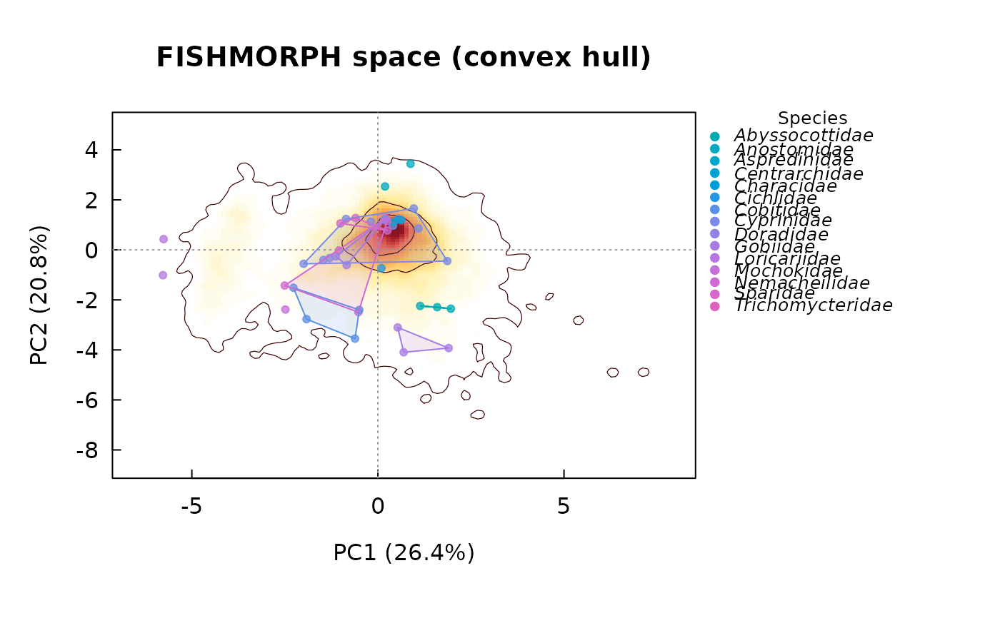

Project specimens into the global FISHMORPH functional space
Source:R/project-fishmorph.R
project_fishmorph.RdBuilds a fixed functional trait space by PCA of a reference database of
FISHMORPH ratios (typically the full FISHMORPH database, ~9,000 species), then
places new specimens into that same, frozen space with stats::predict(),
without re-estimating the ordination. Faithful port of
intraitR::project_fishmorph().
Usage
project_fishmorph(
specimens,
reference = NULL,
source = NULL,
traits = fishmorph_ratio_names(),
groups = NULL,
select_species = NULL,
select_specimens = NULL,
reference_prelogged = TRUE,
specimens_prelogged = FALSE,
log_transform = TRUE,
scale = TRUE,
axes = c(1, 2),
na_action = c("omit", "fail")
)Arguments
- specimens
A data frame (e.g. from
fishmorph_ratios()) with one row per specimen and at least thetraitscolumns, plus aspeciescolumn or agroupsargument for colouring.- reference
The reference trait table: a data frame/matrix with the
traitscolumns, or a path to a delimited file (;-separated read withutils::read.csv2(),,-separated withutils::read.csv()). IfNULL(default), the bundled reference (load_fishmorph_reference()) is used, for the campaign named bysource.- source
Which bundled reference to use when
referenceisNULL:"segment"or"landmark".NULL(default) followsgetOption("fishmorph.source", "segment"), seeset_fishmorph_source(). The ordination is always fitted on whichever table is supplied, so switchingsourcerefits the space rather than reprojecting into the other one – scores from the two campaigns are not comparable term by term.- traits
Character vector of trait columns present on both sides. Defaults to the nine FISHMORPH ratios.
- groups
Optional grouping vector (one per specimen); defaults to a
speciescolumn ofspecimens.- select_species, select_specimens
Optional filters on the projected specimens.
- reference_prelogged, specimens_prelogged
Whether each input is already
log10(x + 1)-transformed. The FISHMORPH database is distributed pre-logged (reference_prelogged = TRUE);fishmorph_ratios()returns raw ratios (specimens_prelogged = FALSE).- log_transform
Apply
log10(x + 1)to bring raw inputs onto the reference scale (defaultTRUE).- scale
Standardise traits to unit variance in the PCA (default
TRUE).- axes
Length-2 integer vector of ordination axes (default
c(1, 2)).- na_action
"omit"(default) drops specimens with missing traits;"fail"errors.
Value
An object of class "fishmorph_projection" with scores,
global_scores, global_species, groups, var_explained, loadings,
axes, traits, n_reference and pca. Has print() and plot()
methods.
Examples
# \donttest{
ref <- load_fishmorph_reference()
#> FISHMORPH reference: segment (published) -- 8970 species.
# a handful of focal specimens (here, reuse some reference rows as demo)
sp <- ref[1:40, ]; sp$species <- sp$Family
proj <- project_fishmorph(sp, reference = ref, specimens_prelogged = TRUE)
plot(proj, style = "hull")

# }